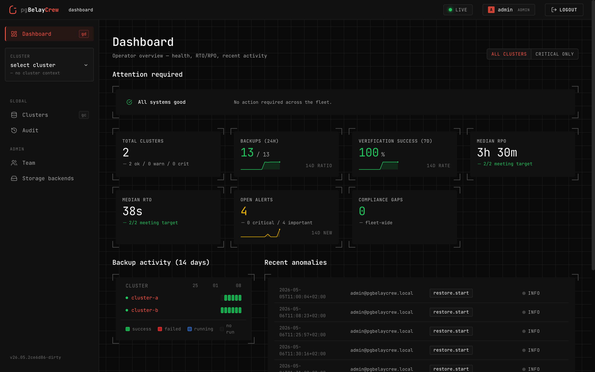

pgBelayCrew
A control plane for PostgreSQL backups — measurable, repeatable, auditable.
An operational layer around wal-g — scheduling, verification, audit —
turning your team's untested runbooks into restores you can prove.
“There are two kinds of sysadmins: those who test backups, and those who will.”
The problem
Your backups exist. Your restores haven't been tested.
The first time you really need to restore is during the incident — with commands you don't remember, against a clock that won't stop. We fix the four problems that make this hard.
Restoring is stressful.
Few-step wizards with explicit dry-runs. Sandboxed restores you can browse before promoting. Dual-approval for anything that touches production.
Backups are never tested.
Verifications run on a schedule (or after every full backup). The system spins up a disposable instance, restores into it, runs assertions, and emits a signed attestation.
Compliance is opaque.
A live dashboard mapped to SOC 2, ISO/IEC 27001, HIPAA, GDPR, and PCI DSS. Auditors get evidence in five minutes, not five days.
RTO/RPO are theoretical.
Real numbers, measured on real data, recorded per restore drill, charted over the last 90 days.
What it does
Four primitives. One operator's day.
The control plane organizes the operator's day around four primitives. Each maps to a top-level area in the UI.
Cluster
One PostgreSQL deployment, discovered via an enrolled agent. Health, configuration findings, RPO/RTO, and recent activity in one place.
Backup
Scheduled or on-demand full / delta backups via wal-g. Live progress,
real archive sizes, retention enforced server-side.
Restore point
A named anchor — pick how paranoid you want to be: light · enough · safe · paranoid.
Restore run
Four intents the wizard exposes — sandbox, recover-data, restore-cluster, emergency. Dual-approval gates the destructive paths.
L1—L4
Verifications
Checksum → sandbox + assertions → regression suite → multi-cluster. Per-level cron or auto-trigger after every full backup.
15
Configuration advisor
Rules sourced from the official PostgreSQL and wal-g docs. Each finding
comes with severity, impact, and the exact ALTER SYSTEM to fix it.
S3
Storage backends
Any S3-compatible object store. Credential rotation, versioning + Object Lock probes, and a read-only bucket explorer.
∞
Hash-chained audit log
Every action is appended to a hash-chained log. Verifiable on demand, exportable as a signed bundle.
Architecture
Three roles. Nothing else.
A console for humans. A small agent next to each PostgreSQL host. An S3-compatible bucket for the bytes. That's it.
CONSOLE
Operator UI
gRPC mTLS
AGENT × N
wal-g wrapper
S3 API
STORAGE
S3-compatible
Compliance
Evidence in five minutes.
31 controls across 5 frameworks, evaluated by real DB queries against state we own. Per-cluster matrix, gap register with waiver workflow, 90-day trend, signed audit bundle on demand.
SOC 2
ISO 27001
HIPAA
GDPR
PCI DSS
Quickstart
Five minutes. Real PG. Real S3. Real agents.
The repo ships a Docker stack — real PostgreSQL, real MinIO, real OIDC, real agents — that exercises every code path end-to-end.
$
./scripts/bootstrap.sh # dev masterkey + .env
$ docker compose up -d # PG + MinIO + Dex + console + agents
$ ./scripts/seal-init.sh # unseal console
$ ./scripts/enroll-agents.sh # mint tokens, attach 3 agents
$ ./scripts/seed-data.sh # add initial data
$ ./scripts/smoke.sh # 17 end-to-end scenarios
$ open http://localhost # sign in: admin / admin
Credit where it's due
wal-g does the hard part. We just made it visible.
Let's be honest about who built what. The hard problem — moving real PostgreSQL bytes into object storage, getting them back out again, point-in-time recovery, delta backups, encryption, the WAL stream itself — was solved by the wal-g team years before pgBelayCrew existed. They built the engine. We just wrote a dashboard around it.
Every backup pgBelayCrew runs is a wal-g backup. Every restore is a wal-g restore. We coordinate, schedule, audit, and visualize — but the work that actually keeps your database recoverable is theirs, not ours. If this UI ever saves you a bad night, the credit belongs upstream. Go star them. They earned it.
A note from the maintainer
Most software gets worse over time. Open source is the fix.
You've probably seen this pattern, even without naming it. The app you used to love adds ads. The service you paid for adds new pricing tiers. The tool that worked great last year is now slower, full of features you didn't ask for, and harder to leave. There's a name for it: enshittification. Once you depend on a closed service, the company running it has every reason to make it worse for you — that's how they squeeze more money out of you. It's not a bug. It's how closed software is built to behave.
Open source breaks that loop. If we ever start making pgBelayCrew worse for you, you can take the code, run your own version, and walk away. That's not a side benefit. That's the whole reason this project is open.
-
01
Open beats closed for new ideas. A small private team can't outthink the rest of the internet. The best fixes, the best features, and the sharpest criticism come from people you've never met, reading the code. Closed code makes all of that impossible — by design.
-
02
Open source is a habit, not a checkbox. Picking an open license on day one is the easy part. The hard part is shipping every change in public — bug fixes, mistakes, half-finished ideas, the lot — even when keeping them hidden would be easier. That's where most projects quietly stop being open.
-
03
Money is fuel, not the goal. Making money is fine. Making money the goal is how good products turn into bad ones. Revenue should pay for the next improvement — not be the reason the project exists. The day money becomes the target, the product starts getting worse, even if the website still looks fine.
-
04
Open source is a gift, not an invoice. A gift given is a gift gone. You don't hand someone a present and then watch to see if they thank you for it. Same with code. We put pgBelayCrew in the open for whoever can use it — one team, one bad night, one database saved is already enough. Stars, sponsors, kind words: nice when they happen, never the reason. The release itself was the whole point.
— pgBelayCrew · AGPL v3 · on purpose.